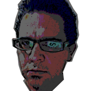
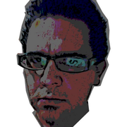

Acerca de
twitter @mapologo
$ geomática poética, geomancia matemática, $ hacktivista, Python & R, Pop & Rock Indie, $ Otaku & Geek, Zen & K, Utopía & Emancipación
Tatuy, Venezuela
twitter @mapologo
$ geomática poética, geomancia matemática, $ hacktivista, Python & R, Pop & Rock Indie, $ Otaku & Geek, Zen & K, Utopía & Emancipación
Tatuy, Venezuela
Comentarios
Comments powered by Disqus